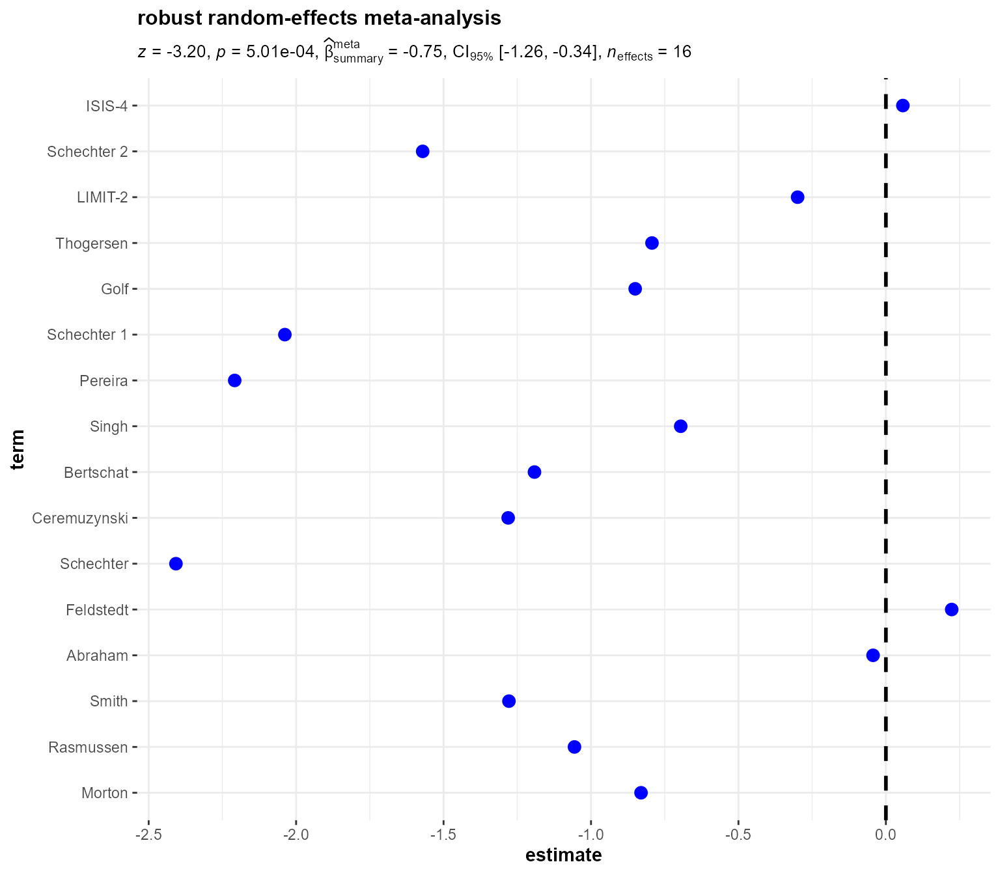

The function ggstatsplot::ggcoefstats generates dot-and-whisker plots for regression models saved in a tidy data frame. The tidy dataframes are prepared using the following packages: broom, broom.mixed, and parameters. Additionally, if available, the model summary indices are also extracted from the following packages: broom, broom.mixed, and performance.
In this vignette, we will see examples of how to use this function. We will try to cover as many classes of objects as possible. Unfortunately, there is no single dataset that will be helpful for carrying out all types of regression analyses and, therefore, we will use various datasets to explore data-specific hypotheses using regression models.
Note before: The following demo uses the pipe operator (%>%), so in case you are not familiar with this operator, here is a good explanation: http://r4ds.had.co.nz/pipes.html
General structure of the plots
Although the statistical models displayed in the plot may differ based on the class of models being investigated, there are few aspects of the plot that will be invariant across models:
The dot-whisker plot contains a dot representing the estimate and their confidence intervals (
95%is the default). The estimate can either be effect sizes (for tests that depend on theFstatistic) or regression coefficients (for tests witht, \(\chi^{2}\), andzstatistic), etc. The function will, by default, display a helpfulx-axis label that should clear up what estimates are being displayed. The confidence intervals can sometimes be asymmetric if bootstrapping was used.The caption will contain diagnostic information, if available, about models that can be useful for model selection: The smaller the Akaike’s Information Criterion (AIC) and the Bayesian Information Criterion (BIC) values, the “better” the model is.
The output of this function will be a
ggplot2object and, thus, it can be further modified (e.g., change themes, etc.) withggplot2functions.
Supported models
Most of the regression models that are supported in the underlying packages are also supported by ggcoefstats. For example-
aareg, anova, aov, aovlist, Arima, BFBayesFactor, bayesx, bayesGARCH, BBmm, BBreg, bcplm, betamfx, betaor, bglmerMod, bife, bigglm, biglm, blavaan, bmlm, blmerMod, bracl, brglm2, brmsfit, brmultinom, btergm, cch, cgam, cgamm, cglm, clm, clm2, clmm, clmm2, coeftest, complmrob, confusionMatrix, coxme, coxph, coxph.penal, cpglm, cpglmm, crch, crq, DirichReg, drc, emmGrid, epi.2by2, ergm, feis, felm, fitdistr, flexsurvreg, gam, Gam, gamlss, garch, geeglm, glmc, glmerMod, glmmTMB, gls, glht, glm, glmm, glmmadmb, glmmPQL, glmRob, glmrob, glmx, gmm, hurdle, ivreg, iv_robust, lavaan, lm, lm.beta, lmerMod, lmerModLmerTest, lmodel2, lmRob, lmrob, lm_robust, logitmfx, logitor, logitsf, LORgee, lqm, lqmm, lrm, manova, maov, mcmc, mcmc.list, MCMCglmm, mclogit, mmclogit, mediate, metafor, metaplus, mixor, mjoint, mle2, mlm, multinom, negbin, negbinmfx, negbinirr, nlmerMod, nlrq, nlreg, nls, orcutt, orm, plm, poissonmfx, poissonirr, polr, ridgelm, rjags, rlm, rlmerMod, robmixglm, rq, rqss, semLm, semLme, slm, speedglm, speedlm, stanfit, stanreg, survreg, svyglm, svyolr, svyglm, tobit, truncreg, vgam, vglm, wbgee, wblm, zcpglm, zeroinfl, etc.
Examples of supported models
In the following examples, we will try out a number of regression models and, additionally, we will also see how we can change different aspects of the plot itself.
omnibus ANOVA (aov)
# setup set.seed(123) library(ggstatsplot) library(ggplot2) # model mod

Note that we can also use this function for model selection. You can try out different models with the code below and see how the AIC and BIC values change.
# setup
set.seed(123)
library(ggstatsplot)
# plot
ggstatsplot::combine_plots(
# model 1
ggstatsplot::ggcoefstats(
x = stats::aov(formula = rating ~ mpaa, data = movies_long),
title = "1. Only MPAA ratings"
),
# model 2
ggstatsplot::ggcoefstats(
x = stats::aov(formula = rating ~ genre, data = movies_long),
title = "2. Only genre"
),
# model 3
ggstatsplot::ggcoefstats(
x = stats::aov(formula = rating ~ mpaa + genre, data = movies_long),
title = "3. Additive effect of MPAA and genre"
),
# model 4
ggstatsplot::ggcoefstats(
x = stats::aov(formula = rating ~ mpaa * genre, data = movies_long),
title = "4. Multiplicative effect of MPAA and genre"
),
title.text = "Model selection using ggcoefstats"
)

Anova with ez package
set.seed(123) library(ez) data(ANT) # run an ANOVA on the mean correct RT data. rt_anova


linear mixed-effects model (lmer/lmerMod)
# set up
library(lme4)
library(ggstatsplot)
set.seed(123)
# combining the two different plots
ggstatsplot::combine_plots(
# model 1: simple linear model
ggstatsplot::ggcoefstats(
x = stats::lm(formula = scale(rating) ~ scale(budget), data = movies_long),
title = "linear model",
stats.label.color = "black",
exclude.intercept = FALSE # show the intercept
) +
ggplot2::labs(x = parse(text = "'standardized regression coefficient' ~italic(beta)")),
# model 2: linear mixed-effects model
ggstatsplot::ggcoefstats(
x = lme4::lmer(
formula = scale(rating) ~ scale(budget) + (budget | genre),
data = movies_10,
control = lme4::lmerControl(calc.derivs = FALSE)
),
title = "linear mixed-effects model",
stats.label.color = "black",
exclude.intercept = FALSE
) +
ggplot2::labs(
x = parse(text = "'standardized regression coefficient' ~italic(beta)"),
y = "fixed effects"
),
nrow = 2,
title.text = "Relationship between movie budget and its IMDB rating"
)
#> Error: 'data' not found, and some variables missing from formula environmentNote that for mixed-effects models, only the fixed effects are shown because there are no confidence intervals for random effects terms. In case, you would like to see these terms, you can enter the same object you entered as x argument to ggcoefstats:
# setup
set.seed(123)
library(lme4)
library(broomExtra)
# tidy output
broomExtra::tidy_parameters(
lme4::lmer(
formula = scale(rating) ~ scale(budget) + (budget | genre),
data = movies_long,
control = lme4::lmerControl(calc.derivs = FALSE)
)
)
#> # A tibble: 2 x 8
#> term estimate std.error conf.low conf.high statistic df.error p.value
#>
#> 1 (Intercept) -0.0617 0.135 -0.327 0.204 -0.456 1573 0.649
#> 2 scale(budget) 0.105 0.0420 0.0227 0.187 2.50 1573 0.0124
robust linear mixed-effects models (rlmer)
Robust version of lmer (as implemented in robustlmm package) is also supported-
# setups set.seed(123) library(robustlmm) # model roblmm.mod

linear mixed-effects models with lmerTest (lmerModLmerTest)
# setup set.seed(123) library(lmerTest) # fit linear mixed model to the ham data: fm


non-linear least-squares model (nls)
So far we have been assuming a linear relationship between movie budget and rating. But what if we want to also explore the possibility of a non-linear relationship? In that case, we can run a non-linear least squares regression. Note that you need to choose some non-linear function, which will be based on prior exploratory data analysis (y ~ k/x + c implemented here, but you can try out other non-linear functions, e.g. Y ~ k * exp(-b*c)).
# setup set.seed(123) library(ggstatsplot) # model mod

This analysis shows that there is indeed a possible non-linear association between rating and budget (non-linear regression term k is significant), at least with the particular non-linear function we used.

generalized linear model (glm)
In all the analyses carried out thus far, the outcome variable (y in y ~ x) has been continuous. In case the outcome variable is nominal/categorical/factor, we can use the generalized form of linear model that works even if the response is a numeric vector or a factor vector, etc.
# setup library(ggstatsplot) set.seed(123) # having a look at the Titanic dataset df Can't calculate log-loss.

Note: Few things to keep in mind for glm models,
The exact statistic will depend on the family used. Below we will see a host of different function calls to
glmwith a variety of different families.Some families will have a
tstatistic associated with them, while others azstatistic. The function will figure this out for you.
# creating dataframes to use for regression analyses
library(ggstatsplot)
# dataframe #1
df.counts %
tibble::as_tibble(.)
# dataframe #2
df.clotting %
tibble::as_tibble(.)
# dataframe #3
x1 %
tibble::as_tibble(.)
# dataframe #4
x2 %
tibble::as_tibble(.)
# combining all plots in a single plot
ggstatsplot::combine_plots(
# Family: Poisson
ggstatsplot::ggcoefstats(
x = stats::glm(
formula = counts ~ outcome + treatment,
data = df.counts,
family = stats::poisson(link = "log")
),
title = "Family: Poisson",
stats.label.color = "black"
),
# Family: Gamma
ggstatsplot::ggcoefstats(
x = stats::glm(
formula = lot1 ~ log(u),
data = df.clotting,
family = stats::Gamma(link = "inverse")
),
title = "Family: Gamma",
stats.label.color = "black"
),
# Family: Quasi
ggstatsplot::ggcoefstats(
x = stats::glm(
formula = y ~ x,
family = quasi(variance = "mu", link = "log"),
data = df.3
),
title = "Family: Quasi",
stats.label.color = "black"
),
# Family: Quasibinomial
ggstatsplot::ggcoefstats(
x = stats::glm(
formula = y ~ x,
family = stats::quasibinomial(link = "logit"),
data = df.4
),
title = "Family: Quasibinomial",
stats.label.color = "black"
),
# Family: Quasipoisson
ggstatsplot::ggcoefstats(
x = stats::glm(
formula = y ~ x,
family = stats::quasipoisson(link = "log"),
data = df.4
),
title = "Family: Quasipoisson",
stats.label.color = "black"
),
# Family: Gaussian
ggstatsplot::ggcoefstats(
x = stats::glm(
formula = Sepal.Length ~ Species,
family = stats::gaussian(link = "identity"),
data = iris
),
title = "Family: Gaussian",
stats.label.color = "black"
),
ncol = 2,
title.text = "Exploring models with different `glm` families",
title.color = "blue"
)

Fit Generalized Estimating Equations with geepack (geeglm)
# setup set.seed(123) library(geepack) data(dietox) dietox$Cu


logistic regression model (lrm)
# setup library(rms) set.seed(123) # data n Can't extract residuals from model. #> Can't calculate log-loss.

Two-Stage Least Squares Instrumental Variables Regression (iv_robust)
# setup set.seed(123) library(fabricatr) library(estimatr) # data dat

ordinary least squares with robust standard errors (lm_robust)
# for reproducibility set.seed(123) library(estimatr) # model mod

fitting negative binomial GLM (negbin)
Just to demonstrate that this can be done, let’s also flip the axes:
# setup library(MASS) library(lme4) set.seed(101) # data dd

generalized linear mixed-effects model (glmer/glmerMod)
# setup set.seed(123) library(lme4) # model mod Can't calculate log-loss.

Fitting Generalized Linear Mixed Models using MCML (glmm)
# setup library(glmm) data(BoothHobert) set.seed(1234) # model mod.mcml1

fitting negative binomial GLMM (glmer.nb)
# setup library(MASS) library(lme4) set.seed(101) # data dd Random effect variances not available. Returned R2 does not account for random effects.


Compound Poisson Generalized Linear Mixed Models (cpglmm)
# set up set.seed(123) library(cplm) # model mod

Bayesian Compound Poisson Linear Models (bcplm)
# set up set.seed(123) library(cplm) # model mod Tuning phase... #> Acceptance rate: min(46.00%), mean(51.25%), max(56.00%) #> ----------------------------------------- #> Start Markov chain 1 #> Iteration: 3000 #> Acceptance rate: min(45.10%), mean(49.81%), max(54.93%) #> Iteration: 6000 #> Acceptance rate: min(44.32%), mean(49.67%), max(54.83%) #> ----------------------------------------- #> Start Markov chain 2 #> Iteration: 3000 #> Acceptance rate: min(44.27%), mean(50.06%), max(56.13%) #> Iteration: 6000 #> Acceptance rate: min(44.58%), mean(50.19%), max(55.83%) #> ----------------------------------------- #> Start Markov chain 3 #> Iteration: 3000 #> Acceptance rate: min(45.40%), mean(49.65%), max(54.53%) #> Iteration: 6000 #> Acceptance rate: min(45.83%), mean(49.82%), max(54.97%) #> ----------------------------------------- #> Markov Chain Monte Carlo ends! # plot ggstatsplot::ggcoefstats( x = mod, title = "Bayesian Compound Poisson Linear Models" )

Zero-inflated Compound Poisson Generalized Linear Models (zcpglm)
# set up set.seed(123) library(cplm) da

Zero-Inflated Count Data Regression (zeroinfl)
# setup
set.seed(123)
library(pscl)
# data
data("bioChemists", package = "pscl")
# model
mod 


Constrained Generalized Additive Model Fitting (cgam)
# setup set.seed(123) library(cgam) data(cubic) # model m

Constrained Generalized Additive Mixed-Effects Model Fitting (cgamm)
# setup set.seed(123) library(cgam) # simulate a balanced data set with 30 clusters # each cluster has 30 data points n

Hurdle Models for Count Data Regression (hurdle)
# setup
set.seed(123)
library(pscl)
data("bioChemists", package = "pscl")
# geometric-poisson
fm_hp2 Warning: Number of labels is greater than default palette color count.
#> Try using another color `palette` (and/or `package`).
beta-binomial mixed-effects model (BBmm)
# setup
if (isFALSE("PROreg" %in% installed.packages())) {
install.packages("https://cran.r-project.org/src/contrib/Archive/PROreg/PROreg_1.0.tar.gz",
repos = NULL,
type = "source"
)
}
library(PROreg)
set.seed(123)
# defining the parameters
k Iteration number: 1
#> Iteration number: 2
#> Iteration number: 3
#> Iteration number: 4
#> Iteration number: 5
# plot
ggstatsplot::ggcoefstats(
x = mod,
exclude.intercept = FALSE,
title = "beta-binomial mixed-effects model"
)
beta-binomial logistic regression model (BBreg)
# setup set.seed(18) library(PROreg) # we simulate a covariate, fix the paramters of the beta-binomial # distribution and simulate a response variable. # Then we apply the model, and try to get the same values. k

binary choice models with fixed effects (bife)
# setup set.seed(123) library(bife) dataset Warning: Number of labels is greater than default palette color count. #> Try using another color `palette` (and/or `package`).


robust generalized linear models (robmixglm)
# setup set.seed(123) library(robmixglm) library(MASS) data(forbes) # model forbes.robustmix

generalized linear models with extra parameters (glmx)
# setup library(glmx) library(MASS) set.seed(1) d

generalized linear mixed model trees (glmertree)
# setup
set.seed(123)
library(glmertree)
data("DepressionDemo", package = "glmertree")
# fit normal linear regression LMM tree for continuous outcome
lt 
generalized linear mixed models using Penalized Quasi-Likelihood (glmmPQL)
# setup
set.seed(123)
library(MASS)
library(nlme)
# model
mod 2),
random = ~ 1 | ID,
family = binomial,
data = bacteria,
verbose = FALSE
)
# plot
ggstatsplot::ggcoefstats(
x = mod,
title = "generalized linear mixed models using Penalized Quasi-Likelihood",
exclude.intercept = FALSE
)
#> Can't calculate log-loss.
generalized linear mixed models using Template Model Builder (glmmTMB)
glmmTMB package allows for flexibly fitting generalized linear mixed models (GLMMs) and extensions. Model objects from this package are also supported.
# set up library(glmmTMB) library(lme4) set.seed(123) # model mod

Another example (given the number of terms, let’s only display labels for significant effects):
# setup set.seed(123) library(glmmTMB) data(Salamanders) # model zipm3 Error: All elements in the column `term` should be unique.
generalized linear mixed models using AD Model Builder (glmmadmb)
Another option is to use glmmadmb package.
# setup
if (isFALSE("glmmADMB" %in% installed.packages())) {
install.packages("glmmADMB",
repos = c(
"http://glmmadmb.r-forge.r-project.org/repos",
getOption("repos")
),
type = "source"
)
}
library(glmmADMB)
# simulate values
set.seed(101)
d 
cumulative link models (clm)
So far we have dealt either with continuous or nominal/factor responses (or output variables), but sometimes we will encounter ordinal data (e.g., Likert scale measurement in behavioral sciences). In these cases, ordinal regression models are more suitable.
# for reproducibility set.seed(123) library(ordinal) # model (to speed up calculations, we will use just 10% of the dataset) mod Can't extract residuals from model. #> Can't calculate log-loss. #> Can't calculate proper scoring rules for ordinal, multinomial or cumulative link models.

As can be seen from this plot, both factors (intentionality and consequences) were significant, and so was their interaction.
cumulative link models - older version (clm2)
# for reproducibility set.seed(123) library(ordinal) library(MASS) data(housing, package = "MASS") # data tab26 Can't extract residuals from model. #> Can't calculate log-loss. #> Can't calculate proper scoring rules for ordinal, multinomial or cumulative link models.

cumulative link mixed models (clmm)
# for reproducibility set.seed(123) library(ordinal) # model mod

cumulative link mixed models - older version (clmm2)
# for reproducibility set.seed(123) library(ordinal) # data dat Can't extract residuals from model. #> Can't calculate log-loss. #> Can't calculate proper scoring rules for ordinal, multinomial or cumulative link models.

Linear Regression with Interval-Censored Dependent Variable (semLm)
# setup set.seed(123) library(smicd) # Load and prepare data data Error: No random effects terms specified in formula # plot ggstatsplot::ggcoefstats( x = model, title = "Linear Regression with \nInterval-Censored Dependent Variable" )

Linear Mixed Regression with Interval-Censored Dependent Variable (semLme)
# setup set.seed(123) library(smicd) # Load and prepare data data Note: No confidence intervals available for regression coefficients,so whiskers in the plot will be skipped.

Mixed-Effects Ordinal Regression Analysis (mixor)
# setup
set.seed(123)
library(mixor)
data("SmokingPrevention")
# data frame must be sorted by id variable
SmokingPrevention 
bias reduction in generalized linear models (brglm2)
Note that we can also choose to display labels only for the significant effects. This can be helpful when a large number of regression coefficients are to be displayed in a single plot and we would like to focus only on the significant ones.
# setup
set.seed(123)
library(brglm2)
data("lizards")
# fit the model using maximum likelihood mean bias-reduced fit:
lizardsBR_mean Can't calculate log-loss.
#> Can't calculate proper scoring rules for models without integer response values.
#> `performance_pcp()` only works for models with binary response values.
Bias Reduction For Multinomial Response Models Using The Poisson Trick (brmultinom)
# setup
set.seed(123)
library(MASS)
library(brglm2)
data("housing", package = "MASS")
# Maximum likelihood using brmultinom with baseline category 'Low'
houseML1 Can't calculate proper scoring rules for ordinal, multinomial or cumulative link models.
#> Warning: Number of labels is greater than default palette color count.
#> Try using another color `palette` (and/or `package`).
bias reduction for adjacent category logit models (bracl)
# setup
set.seed(123)
library(brglm2)
data("stemcell")
# bias reduction for adjacent category logit models
# for ordinal responses using the Poisson trick
fit_bracl Can't calculate proper scoring rules for ordinal, multinomial or cumulative link models.
generalized linear models subject to population constraints
# setup set.seed(123) library(glmc) # data n [1] -0.02656434 -14.43904679 1320.26413390 1.00000000 #> [1] -0.0220031 -15.3239529 375.8086391 1.0000000 #> [1] -0.0217611 -15.3261430 18.0697997 1.0000000 #> [1] -0.02176048 -15.32614305 0.04572550 1.00000000 #> [1] -2.176048e-02 -1.532614e+01 2.958267e-07 9.000000e+00 # plot ggstatsplot::ggcoefstats( x = gfit, title = "generalized linear models subject to population constraints", exclude.intercept = FALSE )

Bayesian linear linear mixed-effects models (blmerMod)
# for reproducibility set.seed(123) library(blme) # data data(sleepstudy) sleepstudy$mygrp

Bayesian generalized linear mixed-effects models (bglmerMod)
# for reproducibility set.seed(123) library(blme) # data y Random effect variances not available. Returned R2 does not account for random effects.

ordered logistic or probit regression (polr)
# polr model set.seed(123) library(MASS) polr.mod Can't extract residuals from model. #> Can't calculate log-loss. #> Can't calculate proper scoring rules for ordinal, multinomial or cumulative link models.

multiple linear regression models (mlm)
# model (converting all numeric columns in data to z-scores) mod

multinomial logistic regression models (multinom)
# setup set.seed(123) library(nnet) library(MASS) utils::example(topic = birthwt, echo = FALSE) # model bwt.mu Can't calculate proper scoring rules for ordinal, multinomial or cumulative link models.

multilevel mediation model (bmlm)
# setup
set.seed(123)
library(bmlm)
# model
fit %
dplyr::rename(
.data = .,
estimate = Mean,
term = Parameter,
std.error = SE,
conf.low = `2.5%`,
conf.high = `97.5%`
)
# plot
ggstatsplot::ggcoefstats(
x = df_summary,
title = "Bayesian multilevel mediation models with Stan"
)
#> Note: The argument `statistic` must be specified.
#> Skipping labels with statistical details.
proportional odds and related models (svyolr)
# setup set.seed(123) library(survey) data(api) # preparing data dclus1

survey-weighted generalized linear models (svyglm)
# data library(survey) set.seed(123) data(api) dstrat Can't calculate log-loss.

repeated measures ANOVA (aovlist)
Let’s now consider an example of a repeated measures design.
# for reproducibility set.seed(123) library(ggstatsplot) # specifying the model (note the error structure) # let's use 20% of the sample to speed up the analysis mod

As revealed by this analysis, all effects of this model are significant. But most of the variance is explained by the attribute, with the next important explanatory factor being the measure used. A very little amount of variation in measurement is accounted for by the interaction between these two factors.
robust regression with robust package (lmRob, glmRob)
The robust regression models, as implemented in the robust package are also supported.
ggstatsplot::combine_plots(
# plot 1: glmRob
ggstatsplot::ggcoefstats(
x = robust::glmRob(
formula = Survived ~ Sex,
data = dplyr::sample_frac(tbl = ggstatsplot::Titanic_full, size = 0.20),
family = stats::binomial(link = "logit")
),
title = "generalized robust linear model",
ggtheme = ggthemes::theme_fivethirtyeight(),
ggstatsplot.layer = FALSE
),
# plot 2: lmRob
ggstatsplot::ggcoefstats(
x = robust::lmRob(
formula = Sepal.Length ~ Sepal.Width * Species,
data = iris
),
title = "robust linear model",
package = "awtools",
palette = "a_palette",
ggtheme = ggthemes::theme_tufte(),
ggstatsplot.layer = FALSE
),
# arguments relevant for `combine_plots` function
title.text = "Robust variants of `lmRob` and `glmRob` \n(from`robust` package)",
nrow = 2
)
robust regression with robustbase package (lmrob, glmrob)
Another alternative is to use robust models, as implemented in the robustbase package.
# setup set.seed(123) library(robustbase) # dataframe data(coleman) clotting

MM-type estimators for linear regression on compositional data (complmrob)
# setup set.seed(123) library(complmrob) # data crimes

fit a nonlinear heteroscedastic model via maximum likelihood (nlreg)
set.seed(123) library(nlreg) library(boot) data(calcium) # homoscedastic model fit calcium.nl #> differentiating mean function -- may take a while #> differentiating variance function -- may take a while #> #> differentiating mean function -- may take a while #> differentiating variance function -- may take a while #> #> differentiating mean function -- may take a while #> differentiating variance function -- may take a while #> #> differentiating mean function -- may take a while #> differentiating variance function -- may take a while #> #> differentiating mean function -- may take a while #> differentiating variance function -- may take a while #> #> differentiating mean function -- may take a while #> differentiating variance function -- may take a while

fit a linear model with multiple group fixed effects (felm)
Models of class felm from lfe package are also supported. This method is used to fit linear models with multiple group fixed effects, similarly to lm. It uses the Method of Alternating projections to sweep out multiple group effects from the normal equations before estimating the remaining coefficients with OLS.
# setup set.seed(123) library(lfe) # create covariates x

linear models for panel data (plm)
# data
set.seed(123)
library(plm)
data("Produc", package = "plm")
# model
plm.mod 
analysis of factorial experiments (mixed)
# setup set.seed(123) library(afex) data(sleepstudy) # data sleepstudy$mygrp Error in as.character(formula.f)[[2]]: subscript out of bounds # linear mixed-effects model m2 Error in as.character(formula.f)[[2]]: subscript out of bounds # plot ggstatsplot::combine_plots( ggstatsplot::ggcoefstats(m1, title = "linear model (`afex` package)"), ggstatsplot::ggcoefstats(m2, title = "linear mixed-effects model (`afex` package)") ) #> Can't extract residuals from model. #> Can't calculate log-loss. #> Can't calculate proper scoring rules for ordinal, multinomial or cumulative link models. #> Error in insight::is_model(x): object 'm2' not found
multinomial logit model (mlogit)
# setup
set.seed(123)
library(mlogit)
# data
data("Fishing", package = "mlogit")
Fish Can't calculate proper scoring rules for ordinal, multinomial or cumulative link models.
conditional logit models (mclogit)
# setup set.seed(123) library(mclogit) data(Transport) # model mod #> Iteration 1 - Deviance = 39.74973 #> Iteration 2 - Deviance = 10.50328 #> Iteration 3 - Deviance = 9.231325 #> Iteration 4 - Deviance = 9.227742 #> Iteration 5 - Deviance = 9.227742 #> converged # plot ggstatsplot::ggcoefstats( x = mod, title = "Conditional Logit Models" )

mixed conditional logit models (mmclogit)
# setup set.seed(123) library(mclogit) data(electors) # model mod Iteration 1 - deviance = 1054.511 - criterion = 0.1598497 #> Iteration 2 - deviance = 923.1626 - criterion = 0.02666473 #> Iteration 3 - deviance = 890.3113 - criterion = 0.006530011 #> Iteration 4 - deviance = 883.0567 - criterion = 0.0005723444 #> Iteration 5 - deviance = 881.4344 - criterion = 1.387329e-05 #> Iteration 6 - deviance = 881.2041 - criterion = 1.394381e-07 #> Iteration 7 - deviance = 881.1809 - criterion = 1.04388e-09 #> converged # plot ggstatsplot::ggcoefstats( x = mod, title = "Mixed Conditional Logit Models" ) #> Warning: Number of labels is greater than default palette color count. #> Try using another color `palette` (and/or `package`).

conditional generalized linear models for clustered data (cglm)
# setup set.seed(123) library(cglm) data(teenpov) # model fit.ide Error in `[.data.frame`(data, , as.character(formula)[2]): undefined columns selected # plot ggstatsplot::ggcoefstats( x = fit.ide, title = "conditional generalized linear models for clustered data" ) #> Error in insight::is_model(x): object 'fit.ide' not found
Cox proportional hazards regression model (coxph)
Fitted proportional hazards regression model - as implemented in the survival package - can also be displayed in a dot-whisker plot.
# for reproducibility set.seed(123) library(survival) # create the simplest-test data set test1
Another example with frailty term.
# setup set.seed(123) library(survival) # model model


truncated Gaussian Regression Models (truncreg)
# setup
set.seed(123)
library(truncreg)
library(survival)
# data
data("tobin", package = "survival")
# model
cragg_trunc 0
)
# plot
ggstatsplot::ggcoefstats(
x = cragg_trunc,
title = "Truncated Gaussian Regression Models"
)


high performance linear model (speedlm/speedglm)
Example of high performance linear model-
# setup library(speedglm) set.seed(123) # model mod

Example of high performance generalized linear model-
# setup set.seed(123) library(speedglm) # data n


bounded memory general linear regression (bigglm)
# setup set.seed(123) library(biglm) data(trees) # model mod

parametric survival regression model (survreg)
# setup set.seed(123) library(survival) # model mod Can't calculate log-loss. #> Can't calculate proper scoring rules for models without integer response values. #> `performance_pcp()` only works for models with binary response values.

Fixed Effects Individual Slope Estimator (feis)
# setup
set.seed(123)
library(feisr)
data("mwp", package = "feisr")
# model
feis.mod 
tobit regression (tobit)
# setup
set.seed(123)
library(AER)
data("Affairs", package = "AER")
# model
m1 
Aalen’s additive regression model for censored data (aareg)
# setup library(survival) set.seed(123) # model afit

relative risk regression model for case-cohort studies (cch)
# setup set.seed(123) library(survival) # examples come from cch documentation subcoh

ridge regression (ridgelm)
For ridge regression, neither statistic values nor confidence intervals for estimates are available, so only estimates will be displayed.
# setup set.seed(123) library(MASS) # model names(longley)[1] Note: No confidence intervals available for regression coefficients,so whiskers in the plot will be skipped.

generalized additive models with integrated smoothness estimation (gam)
Important: These model outputs contains both parametric and smooth terms. ggcoefstats only displays the parametric terms.
# setup set.seed(123) library(mgcv) # model g

linear mixed-effects models (lme)
# for reproducibility
set.seed(123)
library(lme4)
library(nlme)
data("sleepstudy")
# model
mod 
linear model using generalized least squares (gls)
The nlme package provides a function to fit a linear model using generalized least squares. The errors are allowed to be correlated and/or have unequal variances.
# for reproducibility set.seed(123) library(nlme) # model mod

inference for estimated coefficients (coeftest)
# setup
set.seed(123)
library(lmtest)
# load data and fit model
data("Mandible", package = "lmtest")
fm Parameters can't be retrieved for objects of class 'simpleError'.
#> Parameters can't be retrieved for objects of class 'simpleError'.

quantile regression (rq)
# for reproducibility
set.seed(123)
library(quantreg)
# loading dataframe needed for the analyses below
data(stackloss)
# plot
ggstatsplot::ggcoefstats(
x = quantreg::rq(
formula = stack.loss ~ .,
data = stackloss,
method = "br"
),
se.type = "iid",
title = "quantile regression"
)
nonlinear quantile regression estimates (nlrq)
# setup set.seed(123) library(quantreg) # preparing data Dat

additive quantile regression (rqss)
# setup set.seed(123) library(quantreg) data(CobarOre) # model fCO

censored quantile regression (crq)
# crq example with left censoring set.seed(1968) library(quantreg) # data n c) # model f

instrumental-variable regression (ivreg)
# setup
suppressPackageStartupMessages(library(AER))
set.seed(123)
data("CigarettesSW", package = "AER")
# model
ivr 
causal mediation analysis (mediate)
# setup set.seed(123) library(mediation) data(jobs) # base models b


generalized additive models for location scale and shape (gamlss)
# setup
set.seed(123)
library(gamlss)
# model
g GAMLSS-RS iteration 1: Global Deviance = 4771.925
#> GAMLSS-CG iteration 1: Global Deviance = 4771.013
#> GAMLSS-CG iteration 2: Global Deviance = 4770.994
#> GAMLSS-CG iteration 3: Global Deviance = 4770.994
# plot
ggstatsplot::ggcoefstats(
x = g,
title = "generalized additive models \nfor location scale and shape"
)
#> ******************************************************************
#> Family: c("BCT", "Box-Cox t")
#>
#> Call: gamlss::gamlss(formula = y ~ pb(x), sigma.formula = ~pb(x),
#> family = BCT, data = abdom, method = mixed(1, 20))
#>
#> Fitting method: mixed(1, 20)
#>
#> ------------------------------------------------------------------
#> Mu link function: identity
#> Mu Coefficients:
#> Estimate Std. Error t value Pr(>|t|)
#> (Intercept) -64.44299 1.33397 -48.31 <2e-16 ***
#> pb(x) 10.69464 0.05787 184.80 <2e-16 ***
#> ---
#> Signif. codes: 0 '***' 0.001 '**' 0.01 '*' 0.05 '.' 0.1 ' ' 1
#>
#> ------------------------------------------------------------------
#> Sigma link function: log
#> Sigma Coefficients:
#> Estimate Std. Error t value Pr(>|t|)
#> (Intercept) -2.65041 0.10859 -24.407 < 2e-16 ***
#> pb(x) -0.01002 0.00380 -2.638 0.00855 **
#> ---
#> Signif. codes: 0 '***' 0.001 '**' 0.01 '*' 0.05 '.' 0.1 ' ' 1
#>
#> ------------------------------------------------------------------
#> Nu link function: identity
#> Nu Coefficients:
#> Estimate Std. Error t value Pr(>|t|)
#> (Intercept) -0.1072 0.6296 -0.17 0.865
#>
#> ------------------------------------------------------------------
#> Tau link function: log
#> Tau Coefficients:
#> Estimate Std. Error t value Pr(>|t|)
#> (Intercept) 2.4948 0.4261 5.855 7.86e-09 ***
#> ---
#> Signif. codes: 0 '***' 0.001 '**' 0.01 '*' 0.05 '.' 0.1 ' ' 1
#>
#> ------------------------------------------------------------------
#> NOTE: Additive smoothing terms exist in the formulas:
#> i) Std. Error for smoothers are for the linear effect only.
#> ii) Std. Error for the linear terms maybe are not accurate.
#> ------------------------------------------------------------------
#> No. of observations in the fit: 610
#> Degrees of Freedom for the fit: 11.7603
#> Residual Deg. of Freedom: 598.2397
#> at cycle: 3
#>
#> Global Deviance: 4770.994
#> AIC: 4794.515
#> SBC: 4846.419
#> ******************************************************************
generalized method of moment estimation (gmm)
# setup set.seed(123) library(gmm) # examples come from the "gmm" package ## CAPM test with GMM data(Finance) r

fit a GLM with lasso or elasticnet regularization (glmnet)
Although these models are not directly supported in ggcoefstats because of the sheer number of terms that are typically present. But this function can still be used to selectively show few of the terms of interest:
# setup library(glmnet) set.seed(2014) # creating a dataframe x # A tibble: 1,086 x 5 #> term step estimate lambda dev.ratio #>#> 1 (Intercept) 1 -0.207 0.152 0 #> 2 (Intercept) 2 -0.208 0.139 0.00464 #> 3 (Intercept) 3 -0.209 0.127 0.0111 #> 4 (Intercept) 4 -0.210 0.115 0.0165 #> 5 (Intercept) 5 -0.210 0.105 0.0240 #> 6 (Intercept) 6 -0.210 0.0957 0.0321 #> 7 (Intercept) 7 -0.210 0.0872 0.0412 #> 8 (Intercept) 8 -0.210 0.0795 0.0497 #> 9 (Intercept) 9 -0.209 0.0724 0.0593 #> 10 (Intercept) 10 -0.208 0.0660 0.0682 #> # ... with 1,076 more rows # displaying only a certain step ggstatsplot::ggcoefstats(x = dplyr::filter(df, step == 4)) #> Note: The argument `statistic` must be specified. #> Skipping labels with statistical details. #> Note: No confidence intervals available for regression coefficients,so whiskers in the plot will be skipped.

joint model to time-to-event data and multivariate longitudinal data (mjoint)
# setup set.seed(123) library(joineRML) data(heart.valve) # data hvd Error in `[.data.frame`(data[[1]], , id): undefined columns selected # extract the survival fixed effects and plot them ggstatsplot::ggcoefstats( x = fit, conf.level = 0.99, exclude.intercept = FALSE, component = "longitudinal", package = "yarrr", palette = "basel", title = "joint model to time-to-event data and multivariate longitudinal data" ) #> #> Call: #> stats::arima(x = lh, order = c(1, 0, 0)) #> #> Coefficients: #> ar1 intercept #> 0.5739 2.4133 #> s.e. 0.1161 0.1466 #> #> sigma^2 estimated as 0.1975: log likelihood = -29.38, aic = 64.76 #> #> Training set error measures: #> ME RMSE MAE MPE MAPE MASE #> Training set 0.0002080786 0.4443979 0.3490217 -3.56676 15.24388 0.9706522 #> ACF1 #> Training set 0.1355949 #> #> Call: #> stats::arima(x = lh, order = c(1, 0, 0)) #> #> Coefficients: #> ar1 intercept #> 0.5739 2.4133 #> s.e. 0.1161 0.1466 #> #> sigma^2 estimated as 0.1975: log likelihood = -29.38, aic = 64.76 #> #> Training set error measures: #> ME RMSE MAE MPE MAPE MASE #> Training set 0.0002080786 0.4443979 0.3490217 -3.56676 15.24388 0.9706522 #> ACF1 #> Training set 0.1355949 #> #> Call: #> stats::arima(x = lh, order = c(1, 0, 0)) #> #> Coefficients: #> ar1 intercept #> 0.5739 2.4133 #> s.e. 0.1161 0.1466 #> #> sigma^2 estimated as 0.1975: log likelihood = -29.38, aic = 64.76 #> #> Training set error measures: #> ME RMSE MAE MPE MAPE MASE #> Training set 0.0002080786 0.4443979 0.3490217 -3.56676 15.24388 0.9706522 #> ACF1 #> Training set 0.1355949 #> #> Call: #> stats::arima(x = lh, order = c(1, 0, 0)) #> #> Coefficients: #> ar1 intercept #> 0.5739 2.4133 #> s.e. 0.1161 0.1466 #> #> sigma^2 estimated as 0.1975: log likelihood = -29.38, aic = 64.76 #> #> Training set error measures: #> ME RMSE MAE MPE MAPE MASE #> Training set 0.0002080786 0.4443979 0.3490217 -3.56676 15.24388 0.9706522 #> ACF1 #> Training set 0.1355949 #> #> Call: #> stats::arima(x = lh, order = c(1, 0, 0)) #> #> Coefficients: #> ar1 intercept #> 0.5739 2.4133 #> s.e. 0.1161 0.1466 #> #> sigma^2 estimated as 0.1975: log likelihood = -29.38, aic = 64.76 #> #> Training set error measures: #> ME RMSE MAE MPE MAPE MASE #> Training set 0.0002080786 0.4443979 0.3490217 -3.56676 15.24388 0.9706522 #> ACF1 #> Training set 0.1355949 #> #> Call: #> stats::arima(x = lh, order = c(1, 0, 0)) #> #> Coefficients: #> ar1 intercept #> 0.5739 2.4133 #> s.e. 0.1161 0.1466 #> #> sigma^2 estimated as 0.1975: log likelihood = -29.38, aic = 64.76 #> #> Training set error measures: #> ME RMSE MAE MPE MAPE MASE #> Training set 0.0002080786 0.4443979 0.3490217 -3.56676 15.24388 0.9706522 #> ACF1 #> Training set 0.1355949

exponential-family random graph models (ergm)
# load the Florentine marriage network data set.seed(123) suppressPackageStartupMessages(library(ergm)) data(florentine) # fit a model where the propensity to form ties between # families depends on the absolute difference in wealth gest

TERGM by bootstrapped pseudolikelihood or MCMC MLE (btergm)
# setup library(network) library(btergm) set.seed(123) # create 10 random networks with 10 actors networks Parameters can't be retrieved for objects of class 'simpleError'. #> Parameters can't be retrieved for objects of class 'simpleError'.

generalized autoregressive conditional heteroscedastic regression (garch)
# setup set.seed(123) library(tseries) data(EuStockMarkets) # model dax #> Could not extract p-values from model object. #> #> Could not extract p-values from model object.

Bayesian Estimation of the GARCH(1,1) Model with Student-t Innovations (bayesGARCH)
# setup set.seed(123) library(bayesGARCH) # data data(dem2gbp) y

maximum-likelihood fitting of univariate distributions (fitdistr)
# model set.seed(123) library(MASS) x


General Linear Hypotheses (glht)
# setup set.seed(123) library(multcomp) # multiple linear model, swiss data lmod

summary grid from emmeans package (emmGrid)
# setup set.seed(123) library(emmeans) # linear model for sales of oranges per day oranges_lm1


confusion matrix (confusionMatrix)
# setup library(caret) set.seed(123) # setting up confusion matrix two_class_sample1


Firth’s Bias-Reduced Logistic Regression (logitsf)
# setup set.seed(123) library(logistf) # dataframe data

Flexible parametric regression for time-to-event data (flexsurvreg)
# setup set.seed(123) library(flexsurv) data(ovarian) # compare generalized gamma fit with Weibull fitg 'r2()' does not support models of class 'flexsurvreg'. #> Can't extract residuals from model.

panel regression models fit via multilevel modeling (wblm)
# setup
set.seed(123)
library(panelr)
# data
data("WageData")
wages 
panel regression models fit via generalized estimating equations (wbgee)
# setup
set.seed(123)
library(panelr)
data("WageData")
# data
wages 
Censored Regression with Conditional Heteroscedasticy (crch)
# setup
set.seed(123)
library(crch)
data("RainIbk")
# mean and standard deviation of square root transformed ensemble forecasts
RainIbk$sqrtensmean 
Marginal Models For Correlated Ordinal Multinomial Responses (LORgee)
# setup
set.seed(123)
library(multgee)
data("arthritis")
# model
fit Warning: Number of labels is greater than default palette color count.
#> Try using another color `palette` (and/or `package`).

marginal effects for a beta regression (betamfx)
Same example can also be used for betaor object.
# setup set.seed(123) library(mfx) # simulate some data n

marginal effects for a logit regression (logitmfx)
Same example can also be used for logitor object.
# setup set.seed(123) library(mfx) # simulate some data n 0.5, 1, 0) # data data

marginal effects for a negative binomial regression (negbinmfx)
Same example can also be used for negbinirr object.
# simulate some data set.seed(123) n

marginal effects for a Poisson regression (poissonmfx)
Same example can also be used for poissonirr object.
# simulate some data set.seed(123) n

Bayesian generalized (non-)linear multivariate multilevel models (brmsfit)
# setup set.seed(123) library(brms) # prior bprior1

Let’s see another example where we use brms to run the same model on multiple datasets-
# setup set.seed(123) library(brms) library(mice) # data imp

Bayesian regression models via Stan (stanreg)
# set up set.seed(123) library(rstanarm) # model fit object 'draws' not found

Bayesian multivariate generalized linear models via Stan (stanmvreg)
# setup set.seed(123) library(rstanarm) pbcLong$ybern = mean(pbcLong$logBili)) # model mod Fitting a multivariate glmer model. #> #> Please note the warmup may be much slower than later iterations! # plot ggstatsplot::ggcoefstats( x = mod, exclude.intercept = FALSE, title = "Bayesian multivariate generalized linear models via Stan" ) #> argument is of length zero

Bayesian nonlinear models via Stan (nlstanreg)
# setup
set.seed(123)
library(rstanarm)
data("Orange", package = "datasets")
Orange$circumference Error in rstanarm::stan_nlmer(formula = circumference ~ SSlogis(age, Asym, : 'stan_nlmer' requires a named self-starting nonlinear function.
# plot
ggstatsplot::ggcoefstats(
x = fit,
title = "Bayesian nonlinear models via Stan"
)
#> object 'draws' not found
STAR Models with BayesX (bayesx)
# setup
set.seed(111)
library(R2BayesX)
## generate some data
n Error in if (grepl(tf[2L], tf[3L], fixed = TRUE)) {: missing value where TRUE/FALSE needed
# plot
ggstatsplot::ggcoefstats(
x = b1,
title = "STAR Models with BayesX",
exclude.intercept = FALSE
)
#> Error in insight::is_model(x): object 'b1' not found
multivariate generalized linear mixed models (MCMCglmm)
# setup set.seed(123) library(lme4) library(MCMCglmm) data(sleepstudy) # model mm0 Error in terms.formula(formula, data = data): invalid term in model formula # plot ggstatsplot::ggcoefstats( x = mm0, title = "multivariate generalized linear mixed model", conf.method = "HPDinterval", exclude.intercept = FALSE, robust = TRUE ) #> Error in insight::is_model(x): object 'mm0' not found
Markov Chain Monte Carlo objects (mcmc)
# loading the data set.seed(123) library(coda) data(line) # select first chain x1

MCMC with Just Another Gibbs Sampler (rjags)
# setup set.seed(123) library(R2jags) # An example model file is given in: model.file Compiling model graph #> Resolving undeclared variables #> Allocating nodes #> Graph information: #> Observed stochastic nodes: 8 #> Unobserved stochastic nodes: 10 #> Total graph size: 41 #> #> Initializing model # plot ggstatsplot::ggcoefstats( x = jagsfit, title = "Markov Chain Monte Carlo with Just Another Gibbs Sampler (JAGS)" )

latent variable model (lavaan)
# setup set.seed(123) library(lavaan) # The Holzinger and Swineford (1939) example HS.model


Regression models with list outputs
Note that a number of regression models will return an object of class list, in which case this function will fail. But often you can extract the object of interest from this list and use it to plot the regression coefficients.
# setup
library(gamm4)
set.seed(123)
# data
dat Gu & Wahba 4 term additive model
# now add 20 level random effect `fac'...
dat$fac $mer
#> [1] "lmerMod"
#> attr(,"package")
#> [1] "lme4"
#>
#> $gam
#> [1] "gam"
# plotting
ggstatsplot::combine_plots(
# first object plot (only parametric terms are shown)
ggstatsplot::ggcoefstats(
x = br$gam,
exclude.intercept = FALSE,
title = "generalized additive model (parametric terms)",
k = 3
),
# second object plot
ggstatsplot::ggcoefstats(
x = br$mer,
exclude.intercept = FALSE,
title = "linear mixed-effects model",
k = 3
),
nrow = 1
)
Meta-analysis
In case the estimates you are displaying come from multiple studies, you can also use this function to carry out random-effects meta-analysis. The dataframe you enter must contain at the minimum the following three columns-
-
term: a column with names/identifiers to annotate each study/effect -
estimate: a column with the observed effect sizes or outcomes -
std.error: a column the corresponding standard errors
parametric
# setup set.seed(123) library(metaplus) # renaming to what the function expects df Note: The argument `statistic` must be specified. #> Skipping labels with statistical details. #> Error in checkForRemoteErrors(val): 2 nodes produced errors; first error: .onLoad failed in loadNamespace() for 'callr', details: #> call: file(file, mode) #> error: cannot open the connection
robust
# setup set.seed(123) library(metaplus) # renaming to what the function expects df Note: The argument `statistic` must be specified. #> Skipping labels with statistical details.

Bayesian
# setup set.seed(123) library(metaplus) # renaming to what the function expects df Note: The argument `statistic` must be specified. #> Skipping labels with statistical details.

You can also provide a dataframe containing all the other relevant information for additionally displaying labels with statistical information.
# let's make up a dataframe (with all available details) df_full

Dataframes
Sometimes you don’t have a model object but a custom dataframe that you want display using this function. If a data frame is to be plotted, it must contain columns named term (names of predictors), and estimate (corresponding estimates of coefficients or other quantities of interest). Other optional columns are conf.low and conf.high (for confidence intervals), and p.value. You will also have to specify the type of statistic relevant for regression models ("t", "z", "f") in case you want to display statistical labels.
# set up set.seed(123) library(ggstatsplot) # data df

Other types of outputs
This function can also be used to extract outputs other than a plot, although it is much more preferable to use the underlying functions instead (e.g., broom::tidy or parameters::model_parameters).
# setup set.seed(123) library(ggstatsplot) # data DNase1 # A tibble: 3 x 11 #> term estimate std.error conf.low conf.high statistic df.error p.value #>#> 1 Asym 2.35 0.0782 2.19 2.50 30.0 13 2.17e-13 #> 2 xmid 1.48 0.0814 1.32 1.64 18.2 13 1.22e-10 #> 3 scal 1.04 0.0323 0.978 1.10 32.3 13 8.51e-14 #> significance p.value.formatted #> #> 1 *** <= 0.001 #> 2 *** <= 0.001 #> 3 *** <= 0.001 #> label #> #> 1 list(~widehat(italic(beta))==2.35, ~italic(t)(13)==30.01, ~italic(p)<= 0.001) #> 2 list(~widehat(italic(beta))==1.48, ~italic(t)(13)==18.23, ~italic(p)<= 0.001) #> 3 list(~widehat(italic(beta))==1.04, ~italic(t)(13)==32.27, ~italic(p)<= 0.001) # glance summary ggcoefstats(nlmod, output = "glance") #> # A tibble: 1 x 9 #> sigma isconv fintol loglik aic bic deviance df.residual nobs #> #> 1 0.0192 TRUE 0.00000828 42.2 -76.4 -73.3 0.00479 13 16
Not supported
This vignette was supposed to give a comprehensive account of regression models supported by ggcoefstats. The list of supported models will keep expanding as additional tidiers are added to the broom, broom.mixed, parameters, and performance packages.
Note that not all models supported in these packages will be supported by ggcoefstats. In particular, classes of objects for which there is no column for estimate (e.g., kmeans, optim, muhaz, survdiff, zoo, etc.) are not supported.
Suggestions
If you find any bugs or have any suggestions/remarks, please file an issue on GitHub: https://github.com/IndrajeetPatil/ggstatsplot/issues
Session Information
For details, see- https://indrajeetpatil.github.io/ggstatsplot/articles/web_only/session_info.html